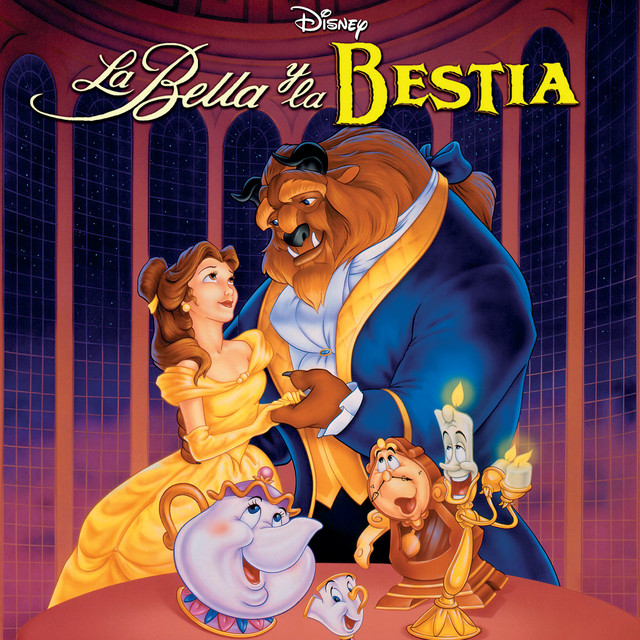

La Bella y la Bestia (1991)
Con la nueva era dorada de Disney ocurrió un florecimiento en la esencia de Disney, cine de animación, sobre todo adaptaciones de literatura infantil. Con esta nueva etapa, llega La Bella y La Bestia (1991) que marcó la historia del cine para siempre al convertirse en la primera película animada en ser nominada a Mejor Película.
" Bella es una brillante y guapa joven que utiliza la lectura como válvula de escape de su rutinaria vida. Cuando su padre es apresado en un misterioso castillo, Bella acude en su búsqueda y se presta a ocupar su lugar. El castillo es propiedad de una atormentada Bestia que, como Bella comprobará con el tiempo, resulta ser un joven príncipe bajo los efectos de un hechizo. Sólo cuando conozca el amor, el príncipe podrá volver a su verdadero cuerpo. Poco a poco, y gracias a la ayuda de los sirvientes de la Bestia, que han sido convertidos en objetos domésticos, Bella irá descubriendo que la belleza se esconde en el interior."
